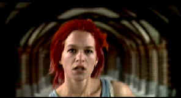

| B,BRun
Lola Run(SE)/B+,A- |
| Columbia/1998/81m/ANA
1.85 |
Wow! The breathless pace of Run Lola Run is positively
exhausting, stimulating and inspiring. German Tom Tykwer has
scripted and directed a wonderfully original film, taking a Rashomon-like
look at a desperate race for survival.
 |
|
Running
with spirals. ©Columbia |
In some
ways, Run Lola Run plays out like a new interactive video
game where you might get to makes choices as you move through the
film. Of course, the filmmaker makes the choices in this case.
Technically, Run Lola Run is consistently dynamic.
Tykwer marries a visual style that compliments the
frenetic pace of his storytelling. Integrating brash cartoon
graphics with the whirlwind race through Berlin's streets works
without taking you out of the action.
Chance plays the biggest part in Run
Lola Run and is emphasized at every turn by writer/director
Tykwer. The moral of the story may be never lose the bag
money you have to deliver to your mob boss. You may have to rob
a bank or heist a casino in order to deliver the goods. With a
techno-rock soundtrack driving with the same ferocious
abandon as the camera, the camera protagonists are propelled
forward with delicious fury.
Columbia has included an audio commentary from director Tykwer
and star Franke Potente. The friendly film principals are
relaxed in sharing some of the experience of making Run Lola
Run. You can learn of the the director's Vertigo fascination,
note an illusion to Village of the Damned, and catch details
that you might otherwise miss in the swift developing action.
The
transfer is beautiful save for a few errant marks that pass by
with momentary notice. You can watch Run Lola Run in the
original German language version, with or without English
titles, or even in a dubbed English version. The titles are easy
to read. The score by Johnny Klimek and Reinhold Heil is
delivered in Dolby Digital 5:1 in appropriately crunching style.
A music video and theatrical trailer complete the package.
|
|

The
Feature
Archive has articles
ranging from A Western is
a Western is a Western to Screen
Voices, The
Heistmasters, Akira
Kurosawa, film preservationist Robert
Harris and Shawshank Redemption director Frank
Darabont.

Film Preservationist Robert Harris talks to Films on Disc.
Click on the image to learn more.


Home to The
American Society of Cinematographers. Includes
features from American Cinematographer Magazine and more...
 Sight
and Sound Magazine is the venerable voice of The British Film
Institute. The site includes articles and film reviews. A great
resource in print and on the Internet. Sight
and Sound Magazine is the venerable voice of The British Film
Institute. The site includes articles and film reviews. A great
resource in print and on the Internet.

DVDinsider is
a daily email publication targeting the DVD Industry
Professional. The publication includes current news, events,
stock prices and more.

Need
a daily fix of movie quotes. Reel Quotes Newsletter has the
answer. Click on the Reel Quotes symbol symbol for more.

The
Movie Poster Archive include extensive poster images from the
films of stars like Susan Hayward, Kirk Douglas, Katharine
Hepburn and many more. This month's featured star is
Susan Hayward
|